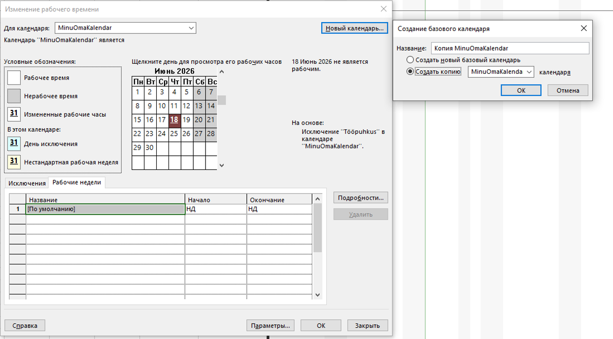
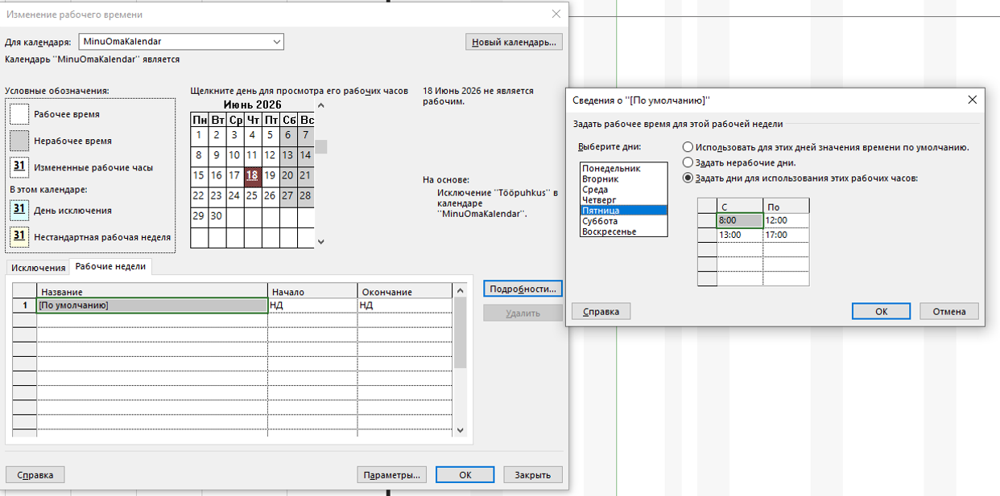
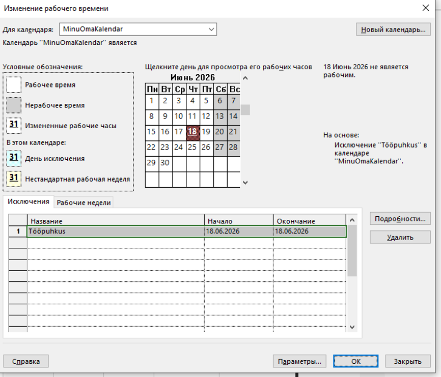
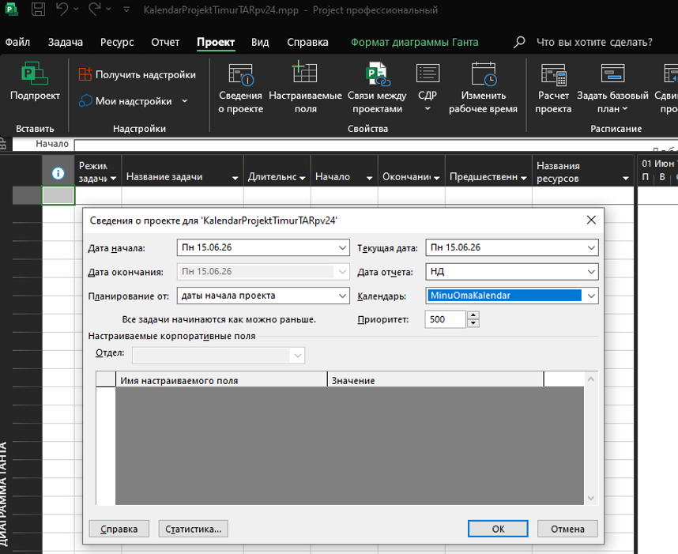

Uue kalendri loomine ja seadistamine
Kalendri seadistamine MS Projectis võimaldab täpselt määrata projekti unikaalsed tööpäevad, lühendatud tööajad ja riigipühad.
1. Uue baaskalendri loomine
Ava vahekaart Projekt ja vali Muuda tööaega. Klõpsa nupule Loo uus kalender, määra uue kalendri nimi (nt "MinuOmaKalender") ja loo see uue baaskalendrina või olemasoleva koopiana.

2. Tööaegade muutmine (Lühendatud reede)
Tööaegade muutmiseks vali vahekaart Töönädalad, klõpsa nupule Lisateave.... Vali soovitud päev (nt reede), aktiveeri valik "Määra päev(ad) vastavalt nendele konkreetsetele tööaegadele" ja muuda tabelis kellaajad lühemaks.

3. Eripäevade ja puhkuste lisamine
Erakorraliste vabad pühade või puhkuste sisestamiseks kasuta vahekaarti Erandid. Sisesta tabelisse eripäeva nimetus (nt "Tööpuhkus") ning määra algus- ja lõpukuupäev.

4. Kalendri rakendamine projektile
Selleks, et loodud kalender hakkaks projekti ajakava mõjutama, ava Projekti teave ja vali rippmenüüst Kalender alt oma loodud kalender. See nihutab ülesannete tähtajad automaatselt vastavalt uutele puhkepäevadele.
